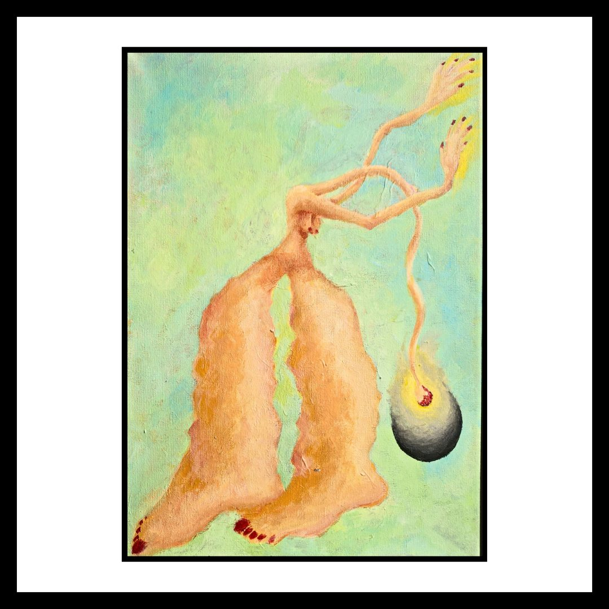
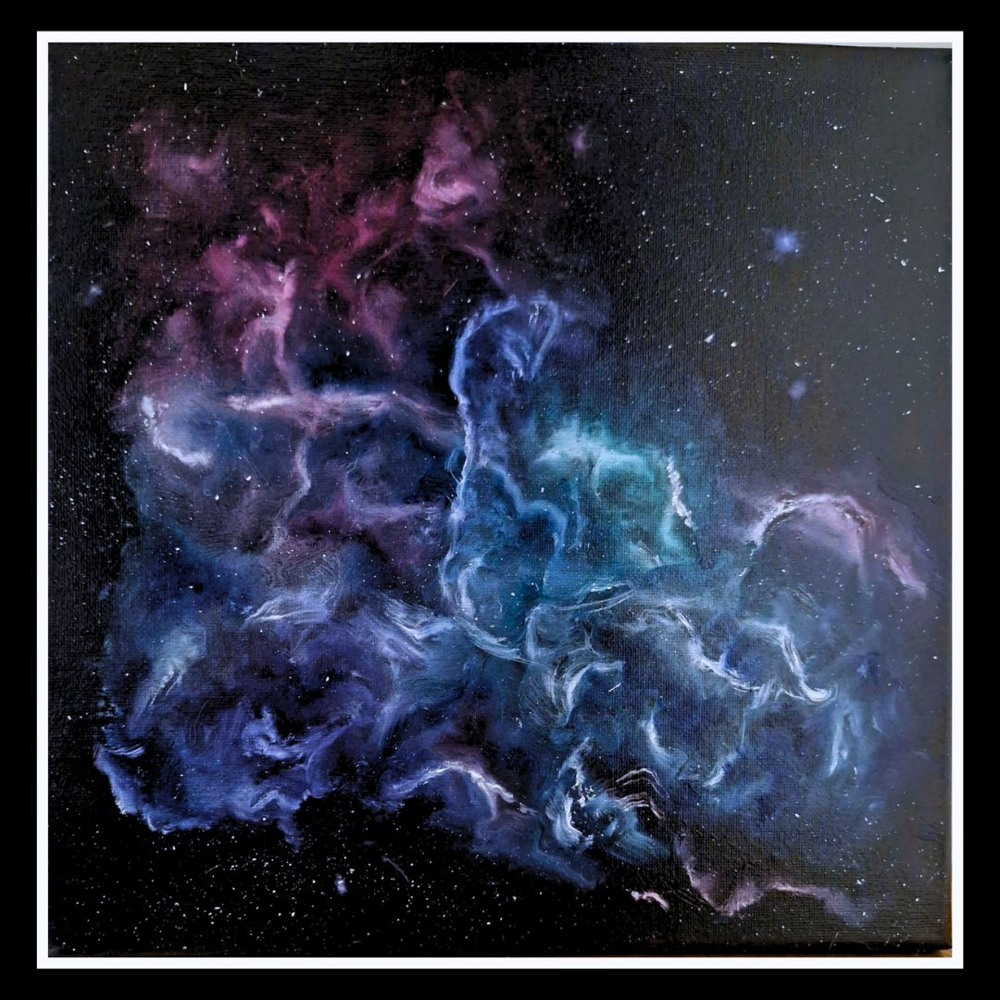
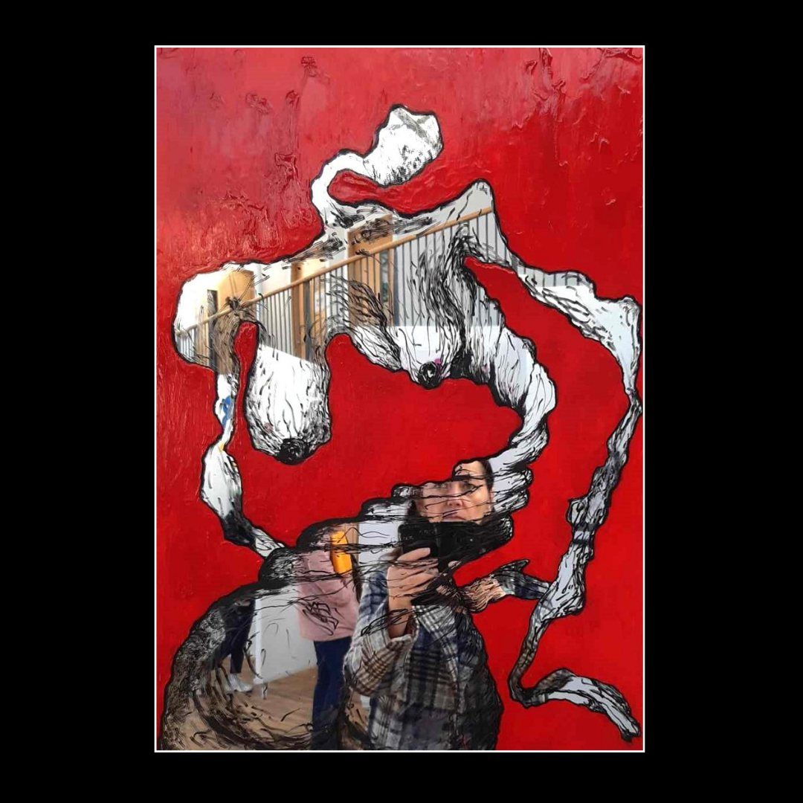

About
Making art is how I listen to the body again.
I trained in sculpture, graduating with a BA in Fine Art from Duncan of Jordanstone College of Art in 1999. Then I stopped making art for a long time. I came back to it in 2018, and I haven't stopped since.
My work is about coming back to the whole self. For years, my own experiences and the culture around me pushed me to live in my head: analytical, logical, reasonable. The body's information, the senses, the gut feelings, got pushed aside. Making art is how I listen to them again.
Bodies are everywhere in my work. Figures fold, stretch, crack open and come apart. Threads and roots tie things together, or try to. There are holes where something should be, and small faces held inside larger ones. I move between paint, ink, clay, plaster, wire and poured paint on mirror, depending on what the idea needs.

“We still talk about a mind-body connection, as if they were two separate things that need joining up.”
I'm curious about how disconnected we've become from our bodies, especially in the West. We still talk about a "mind-body connection", as if they were two separate things that need joining up. Descartes' split runs deep.
And I keep wondering what that costs us together. Do we take time to feel the impact we have on each other? Have care and community been lost as we each try to survive in a culture built on individualism? What happens in our bodies, and in each other, when ego runs the room?
Recent work: we are all energy
My recent paintings move out into space: nebulae, drifting rocks, orbits, rings of light. They come from a belief I've arrived at after a lifetime of wondering what it means to exist. We are all energy. We are not separate.
Daniel Siegel puts this beautifully in his book IntraConnected, with the idea of "MWe": Me + We. Each of us has our own body, our own "me". But we are also parts of something far bigger, a whole system that holds other people, other species and the wider universe. Siegel calls this being intraconnected rather than interconnected. Interconnected still pictures separate selves joined by links. Intraconnected means we were never apart in the first place.

I think this matters. When we see ourselves as separate, it becomes easier to see others as "other". That is where stigma, prejudice and discrimination take root.
It also changes how I think about the impact we have on each other. Have you ever walked into a room and felt the atmosphere in your body? Our physiology responds to the people and places around us. My mirror pieces are my attempt to show this. Our words, attitudes and behaviours, intended or not, don't only touch someone's feelings. They can reach into their body and their whole health. We're often told that other people's emotions are not our responsibility. I wonder whether we would act differently if we knew how far our impact can really travel.
Many questions and wonderings. Always.

Contact
For enquiries about any piece, commissions or prints, please get in touch through Instagram or Facebook.
Message @dmcj_arts on Instagram Message DMcJ Arts on Facebook